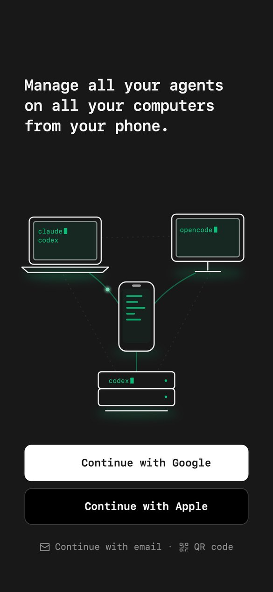
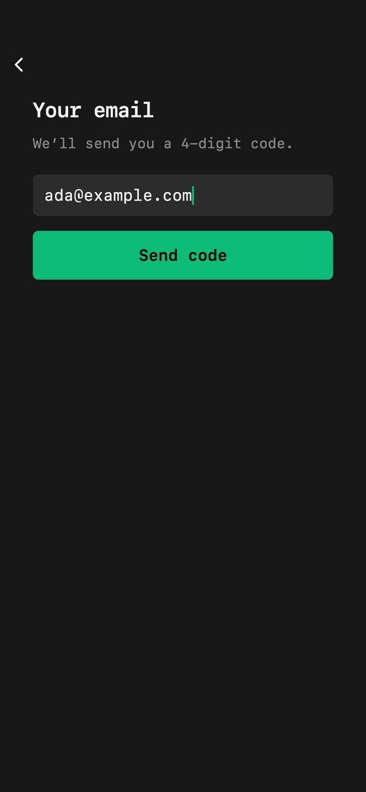
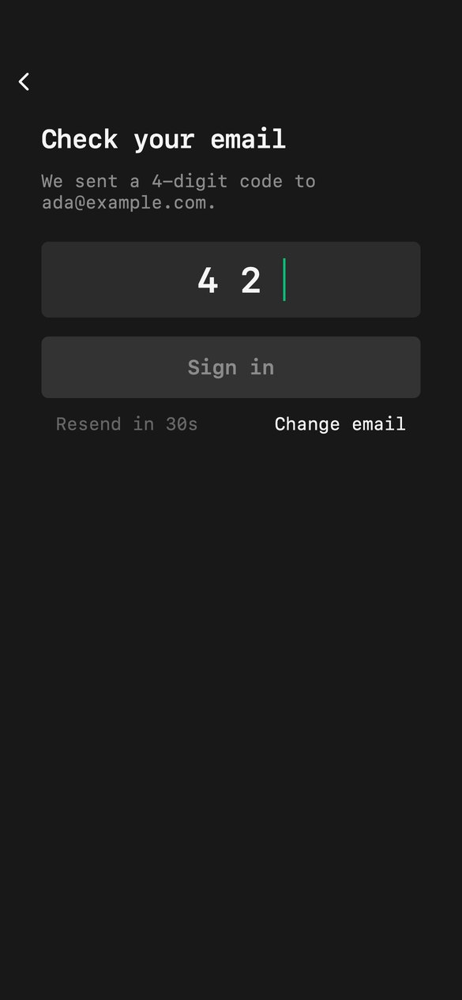
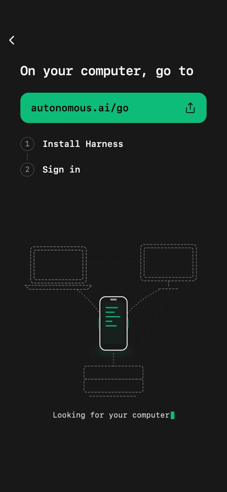
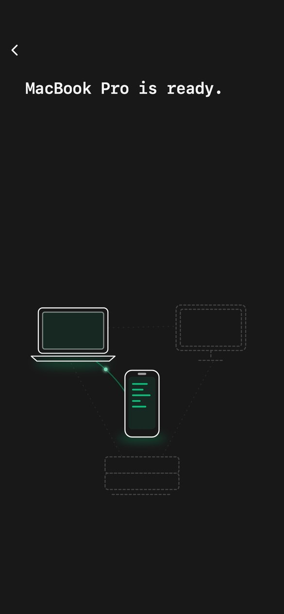

Product measurement, Harness phone onboarding
Every count the phone app sends while someone gets started, step by step, as built on 2026-10-14 (branch feat/mobile-ios-android, commit 248e5b1fc, not yet released).
The steps are the ones on the mobile onboarding page. Screens 1–3 are renders of the current code
(test/render/phone_screens_render_test.dart); 4 and 5 are drawn on that page. Click a screen to enlarge it.
The counts come from mobile/lib/measurement/: the shared ProductMeasurement and the new OnboardingMeasurement.
The names they may use are fixed in backend/src/types/productUsage.ts.
setup_phone_* before sign-in)harness privacy off)How a count is sent
The same mechanism the desktop and terminal already use since #1301, with no event stream.
Each step calls begin(flow) when it starts, which counts …_started. It ends once with one outcome
(ok · failed · cancelled · unknown) and one duration bucket
(under_1s · 1s_to_10s · 10s_to_1m · over_1m). The phone adds these to that UTC day's totals in memory.
A batch of at most 32 counters goes to POST /api/product-usage/report about once a minute. A phone that waited 2 minutes for its computer sends:
| Field | Value |
|---|---|
| schemaVersion · day | 1 · "2026-10-14" (UTC day only, no time) |
| id | "3f0c…-4…", a random receipt so a retry is not counted twice; new for each report |
| revision | 0, the version of the account's Share switch, so an "off" saved meanwhile wins |
| counters | {"ui_phone_computer_wait_started":1, "ui_phone_computer_wait_ok":1, "ui_phone_computer_wait_over_1m":1} |
The backend accepts only names on its list (any other name rejects the whole report) and adds them into daily totals. Who sent a report is used to check their
switch, and is not stored with the totals. Signed out there is no account, so the phone goes by its own Share setup and sign-in counts line,
on by default as on Desktop and kept across launches; turning it off also turns the account's sharing off at the next sign-in. Its reports go without
credentials or cookies to POST /api/product-usage/setup, with "sharing": "default" instead of a revision. That is the only way sign-in is counted, because a sign-in happens before there is an account. A Google sign-in that worked:
| Field | Value |
|---|---|
| counters | {"setup_phone_sign_in_started":1, "setup_phone_sign_in_ok":1, "setup_phone_sign_in_1s_to_10s":1, "setup_phone_sign_in_google_started":1, "setup_phone_sign_in_google_ok":1, "setup_phone_sign_in_google_1s_to_10s":1} |
OnboardingMeasurement. It is counted from its real start
once the switch reads on, and never counted if the switch reads off or the step ends first.What changed from Autonomous Analytics
The old phone stream (mobile/lib/analytics/, removed in ac0c8393d on 2026-09-29) and what replaces it.
| Autonomous Analytics (removed) | Now | |
|---|---|---|
| Destination | The AA Cloud Run endpoint /api/v1/event_tracking, under Grid's write key | The Harness backend, /api/product-usage/report |
| Unit | One event per action, with a timestamp | Daily totals per counter, capped at 1000 a day |
| Who | user_email, user_id, a stable device id, a session id on every event | Nothing. A random receipt per report, for retries only |
| Device | App version and build, OS and version, arch, locale | phone (the surface) only |
| Timing | Exact seconds (seconds_since_login, open_seconds) | Four buckets |
| Apps apart | The phone stamped harness-desktop-v2, the desktop's category, so phone and desktop events could not be told apart | phone · desktop · web in every counter name |
| Opt-out | A build variable (HARNESS_ANALYTICS_DISABLED) | The account's Share switch on every app; off by default before sign-in |
| Old AA event | Now |
|---|---|
| signed_in · sign_in_failed {reason} | sign_in and sign_in_<button> ok · failed · cancelled (section 1) |
| app_first_message {from, seconds_since_login} | first_message: from the session opening to the first send, bucketed (section 4) |
| app_opened {signed_in} | Not an event: people active per app per day come from the backend's daily marks (#1314) |
| new_agent_opened · agent_created | Not on the phone. The computer's daemon counts create requests and their outcomes, without the engine |
| app_closed · screen_view · signed_out | Not collected. Sign-out only ends a running step as cancelled |
The funnel
One flow per step. Within a day, started minus the four outcomes is the people who stopped there: the app closed or crashed mid-step.
| Step | Flow | Starts | ok | failed | cancelled |
|---|---|---|---|---|---|
| 1 · Sign in | sign_in + sign_in_scan|google|apple|email | Google or Apple pressed, an email code entered, a QR code read | Signed in | The service refused, or the page could not open | Google/Apple page closed, or another attempt replaced it |
| 2 · Your computer | computer_wait | "On your computer, go to" shows | A computer joins the account | — | Signed out ("Not you? Sign out"), see the note |
| 3 · Ready | session_open | "… is ready." starts | A session opens (its own, or one picked meanwhile) | No session after 90 s | Signed out, see the note |
| 4 · Session | first_message | That session opens | First line sent in any session after it (mic, composer or Return), or a task typed into New Harness | — | Signed out first |
| 5 · Notifications | notify_permission | The system prompt shows | Allow | — | Don't Allow (unknown when the OS gives no answer) |
cancelled with its not_you mark.1. Welcome and sign-in


| Counter | When |
|---|---|
| sign_in_google_* | "Continue with Google" (signInWithProvider) |
| sign_in_apple_* | "Continue with Apple" |
| sign_in_email_* | "Continue with email", then the 4-digit code (signInWithCode). Sending the code is not counted |
| sign_in_scan_* | "QR code", then a computer's Add Phone code read by the camera (signInWithScan) |
| sign_in_* | The total of all four, as before |
| sign_in_retried | A sign-in that went through after a failed or cancelled try in the same app run |
| sign_in_switched | A sign-in that went through on another button than the first one tried |
Google and Apple were not counted at all before this change, so sign_in totals rise when it ships. A scan that fails and falls back to the emailed code counts as a failed scan; the code typed after it is its own email attempt.
setup_phone_*), the one quiet line with ⓘ at the foot of every signed-out screen; it is on by default and remembered across launches.
A sign-in that went through is counted again under the account's own sharing (ui_phone_sign_in_*_ok, the large population), with retried and switched saying how hard it was. People who never get in stay invisible: take installs and first opens from App Store Connect and Play Console as the denominator.
Only failed. The red reason under the picture ("Could not open the sign-in page…"), the email typed and the code never leave the phone. The old AA reason code is not sent either.
2. Your computer

| Counter | When |
|---|---|
| computer_wait_started | The page shows, after a sign-in in this run or on a fresh phone, for an account with no computers |
| computer_wait_ok | The first computer appears on the account (the 5 s poll) |
| computer_wait_cancelled | Signed out from here; computer_wait_not_you when it was "Not you? Sign out" |
| computer_wait_link_shared | The address sent to the computer from the share sheet |
| computer_wait_<bucket> | How long it took to install Harness and sign in on the computer. Past a minute it also splits into 1m_to_5m, 5m_to_15m, 15m_to_1h, over_1h |
Accounts that already had a computer skip this step, so it has no started for them.
3. The computer joins

| Counter | When |
|---|---|
| session_open_started | The join moment starts (a new computer, or the first ready one on the account) |
| session_open_ok | The hand-over: the computer's session opens, or one picked meanwhile in Find or from a notice |
| session_open_failed | "Waiting for its first session" passes 90 s |
| session_open_cancelled | Signed out meanwhile |
| session_open_blocked_password · blocked_offline | The joining computer wanted its password, or was offline by the account's word too |
A computer that wants a password or is offline leaves the step running, marked once: its time then includes unlocking it.
4. The session
| Counter | When |
|---|---|
| first_message_started | The hand-over opens the session with its one line by the mic |
| first_message_ok | The first line sent after the hand-over in any session (a take from the mic, the composer, or a Return), or a task typed into New Harness. Before 2026-10-20 only a line sent from the session the hand-over opened counted: compare releases separately |
| first_message_cancelled | Signed out before sending. Leaving the session no longer ends it: a line sent in another one still answers it |
The old AA app_first_message timed from sign-in. This times from the session opening, so steps 2 and 3 are not counted twice. Sign-in to first message is the sum of the steps.
5. Notifications
| Counter | When |
|---|---|
| notify_permission_started | The prompt is asked for (once per install) |
| notify_permission_ok | Allow |
| notify_permission_cancelled | Don't Allow |
| notify_permission_unknown | The OS gave no answer, or the request failed |
To read the answer, SystemNotices.requestPermission() now returns the plugin's bool? instead of nothing. Settings ▸ Notifications and Focus's tips call it as before.
ok with nothing on screen. Every count splits by iOS and Android (see Reading the numbers).Already counted, unchanged
The phone flows from #1301/#1303 that the onboarding passes through.
- computer_link: pairing with a computer by the Add Phone code or a password.
- remote_connect: a computer's connection reaching connected.
- People per day and D1/D2/D3/D7 returns: the backend's 10-day pseudonymous marks (#1314), not sent by the app as counts. Nothing is collected until
PRODUCT_USAGE_SUBJECT_KEYis set.
Added on 2026-10-16
The flows the desktop already counted, the phone's two side pages, and who sent a request.
- app_start: a launch that came back signed in, to its first computer answering.
unknownwhen the app left the screen first; a launch that signs in is the onboarding's and is not counted. - connect_user / connect_auto: "Try again" on a computer apart from the app's own dials (launch, a dropped socket coming back), beside the unchanged
remote_connect. A Try again fails at 12 s, as Desktop Connect does. - resume_recovery: a stopped harness resumed from the phone, to its first live turn;
failedwhen the computer refused it. - ui_phone_screen_find_swipe|button, ui_phone_screen_computers_swipe|button: Find and Computers opened, by a swipe on the terminal or by a button (Computers in Settings, its link on a long wait at home). Find's key and screen-reader actions are not counted.
- request_phone_*: the computer's daemon counts the phone's requests (create, resume, close, search…) as the phone's, not as any app's. The phone says so inside the encrypted request (
usageSurface); older phones still count asapp. - Signed out, on by default, as on Desktop: see sign-in above.
Reading the numbers
cd backend && npm run usage:daily -- 14 (read-only DATABASE_URL) prints JSON; its review.flows lists every flow per channel and surface with its starts,
the four outcomes, unmatchedStarts and the duration buckets. The new flows appear there with no change, because the review reads the same vocabulary. Days are UTC; today is partial.
- Conversion between steps compares totals, not people:
session_open_started÷computer_wait_okis close to "joined, then went on", but nothing links the two counts. - Sign-in failure rates describe the phones that left the line on (the default); those that turned it off are missing. Successes,
retriedandswitchedcover every sharing account. resumedmarks a step started in an app run that did not sign in (the app reopened mid-step). Subtract it from starts for fresh starts.- Every phone report carries its release and iOS/Android, so
usage:daily'shealth.breakdownssplits eachui_phone_*count by release and by platform: compare the release before and after a UI change. A margin appears above 20 collector days. Debug builds report asdevelopmentand are not kept, but TestFlight builds are release builds and do count. - The web build of the same app counts under
ui_web_*. Signed out, web sends nothing.
Never sent
What the phone knows during onboarding and keeps to itself.
- The email typed or shown ("Use ada@example.com"), the Google or Apple account, the account id.
- The computer's name ("MacBook Pro"), its id, the session or agent, the starter task and every message.
- Error text, the QR's contents, the one-time codes.
- Any device or install id, OS version, locale, time of day. (The app's release and iOS or Android are sent, as margins.)
- Taps, scrolling, or anything from the offline sample. Of the screens, only that Find or Computers opened, and by swipe or button.
Before it ships
- Backend first. An older backend rejects a whole report that carries a name it does not know (400). The phone then retries that same report each minute until its day is more than a day old, and the other phone counts in it are lost with it. Deploy the backend vocabulary before the phone build.
- The CLI copy of the vocabulary (
cli/src/lib/productUsageContract.ts) is identical, and a backend test enforces that. Since #1323 the desktop'sproduct_measurement.dartevolves on its own (health counters); it only has to name every flow the phone's copy does, which another backend test checks. Desktop sends none of the new flows. - The phone's Privacy ▸ See what's shared now lists the sign-in buttons and the four setup steps. Desktop's copy of that text does not mention them yet.
- The signed-out choice is now drawn differently on each app (the phone's is one line with ⓘ), so the backend test compares its wording on both apps instead of the whole file.
Decided 2026-10-16: signed-out counts are on by default on the phone too, as on Desktop.